{kind=link}
{kind=link}
{kind=link}
{kind=link}
{kind=link}
{kind=link}
{kind=link}
{kind=link}
{kind=link}


Disclaimer: These projects were for educational purposes only. I do not claim to own any of the intellectual property of the Fire Emblem series or any of its content shown here. All rights belong to Intelligent Systems and their respective publishers.
In my teenage years, I was introduced to a tactics RPG called Fire Emblem, which would eventually lead to my interest in game design. Its mix of short-term objectives in each level combined with the long-term objectives of training and keeping alive a diverse cast of characters still fascinates me to this day. I soon learned methods used to edit the games' files which allowed me to experiment and test my own hypotheses about the game's mechanics and balance.
I cannot possibly show all I have done over the years, but I hope to showcase my desire to understand Fire Emblem's combat, level design, progression, and systems, to both learn and explore potential alternative player experiences. Below are some of the modifications I have made that explore these aspects but also that I had a lot of fun creating.
The overarching goal is to alter the player experience in meaningful ways: tightening or loosening difficulty, rebalancing characters and weapons, creating new tactical scenarios through custom levels or maps, and adding content that feels consistent with each game's design.
Building Custom Skills in Fire Emblem: Engage
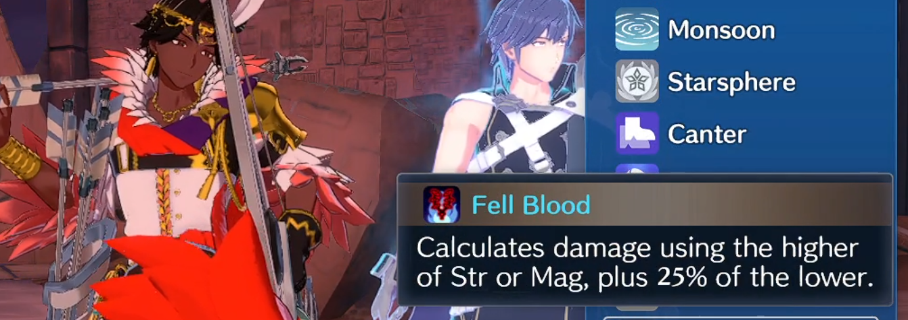
Even more so than others, this game in particular has incredible potential when it comes to modding. In addition to being built using the Unity engine, the developers created a unique system that allows for easy creation of skills with custom effects. Because much of the player experience in Fire Emblem: Engage is driven by these skills, having the ability to create custom skills opens up a wide range of possibilities to experiment with the gameplay. These skills and their effects are usually hard-coded in other games.
By examining skills built using this system, I have learned how to create my own custom skills to experiment with many of the game's other systems. Some of these are showcased below.
In the video above we see how the custom skill 'Fell Blood' interacts with another skill present on the character. By engaging with Emblem Chrom, Fogado gains +10 Magic thanks to the 'Other Half' skill. The 'Fell Blood' skill sees the change in Fogado's magic stat and applies the proper effect with these new stats in mind.
Fogado's damage on the enemy went from 32 damage per attack, to 36.
Even though skills can be made with a simple text editor, this custom skill was relatively simple to implement compared to some of the others present in the game. It's actually made up of two different 'skills'. The top snippet simply acts as a container to place the effect into which is the bottom snippet. The bottom snippet is then considered 'invisible' so that it doesn't appear twice in battle.
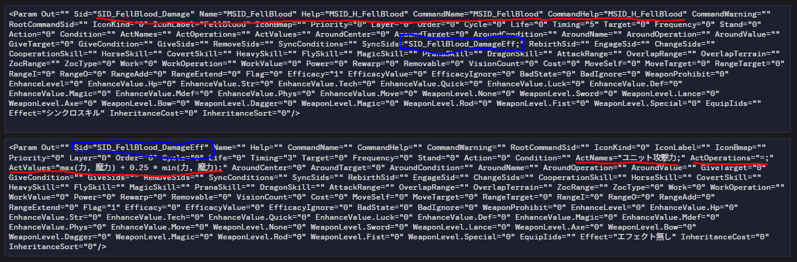
Most of the fields in both skills here are left blank as they aren't needed. The exciting part is in the bottom snippet, where we can see the formula that is applied to affect damage. The skill description matches what happens in the ActValues field. It looks for the highest of the Strength or Magic stat and then adds 0.25 times the lower of the unit's Strength or Magic. This value that is calculated is then applied into the ActNames field. In this case 'ユニット攻撃力' translates to 'Unit Attack Power'.
Bringing weaker Emblems up to par
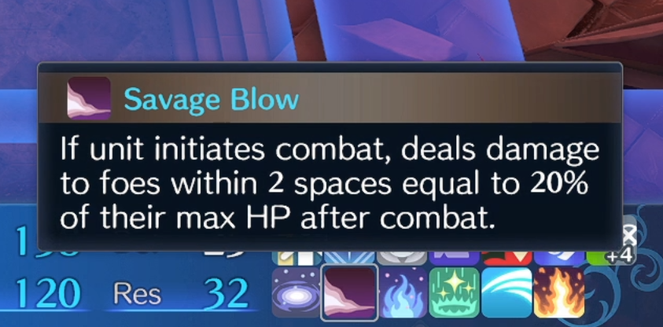
In my attempts to improve some of the weaker effects in this game, I discovered a very strong interaction between a method of attacking and a skill which went unused by the developers. I was definitely successful in strengthening the Emblem.
The 'Savage Blow' skill was present in the code (but was unobtainable for player characters) and was a staple in Fire Emblem: Fates and I figured that putting it on an Emblem character from that game would be fitting. What I did not realize was how it would trigger multiple times for each enemy the character targets with the Emblem's AOE attack.
Custom Maps for GBA Fire Emblem Titles
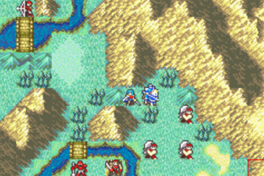
Unlike the more modern titles, GBA Fire Emblem titles have a well-established set of modding tools that allow nearly every element of a map to be changed — terrain layout, enemy placement, objectives, reinforcements, and more. This opens up a lot of room for experimentation as they used easy to modify 2D-tilesets.
The maps in the images below show a before-and-after comparison of map overhauls I made for Fire Emblem: The Sacred Stones back in 2020. I've also included a video showing one of the edited maps working in-game.
My goal with the Map overhaul was to keep the central idea of the original game's maps intact, while also changing their layout to feel more challenging and dynamic.
The original prologue map was extremely linear and predictable as it's the player's first experience with the game. For the overhaul, I wanted to keep the experience of fighting enemies in a valley, except now there are more pathways where more enemies spawn. The player is given more options to decide how they want to approach it with the different routes.
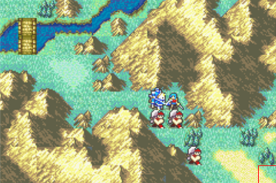
Original layout
The original chapter 3 places the player in a very tight space with a lot of units, which I felt was very awkward especially when the player had not unlocked battle preparations yet. Additionally they are tasked with recruiting an NPC who spawns right above them which they can easily access.
The edited map fixes the cramped layout at the start by opening up the space for the player while also giving them different directions to send their units. The recruitable NPC now appears at the top of the map which incentivizes a more aggressive approach in order to get to them before they get themselves killed.
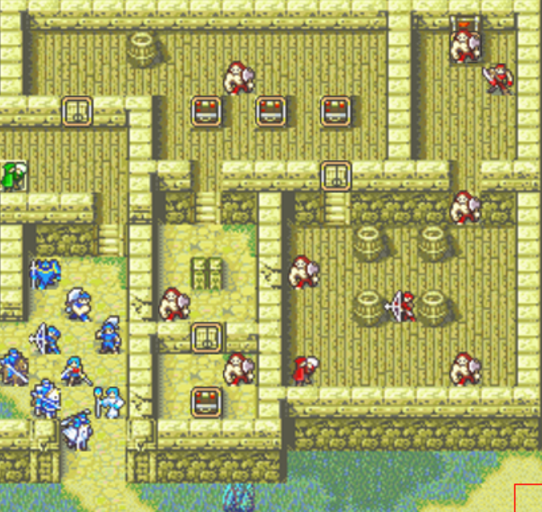
Original layout
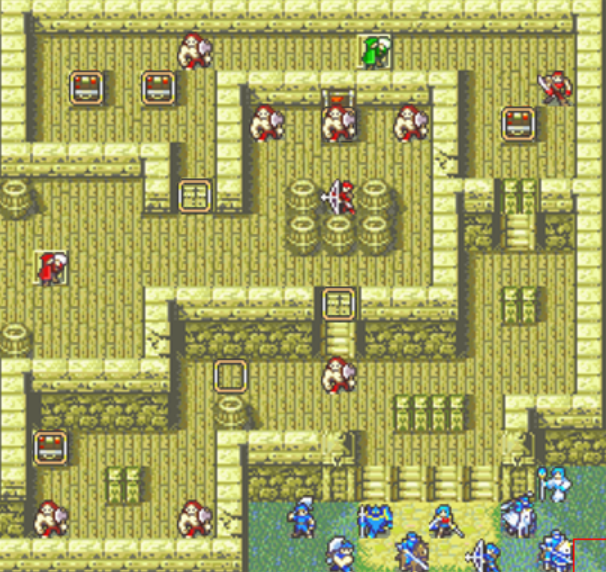
Edited layout
In the original game, this chapter presents the player with a shop, an armory, and an arena. My problem is more tied to the victory conditions. Players are given as much time as they want to complete it, which can be abused with the arena, which gives them access to infinite gold and experience points. This is a common design flaw in many of FE8's maps.
The edited map addresses this issue by imposing a time limit on the chapter, thus encouraging players to complete it quickly so they can access the arena and vendors with their remaining time. Additionally the player's army is split from the get go allowing them to cover more ground.
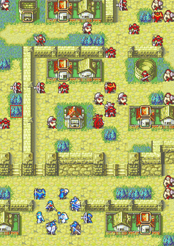
Original layout
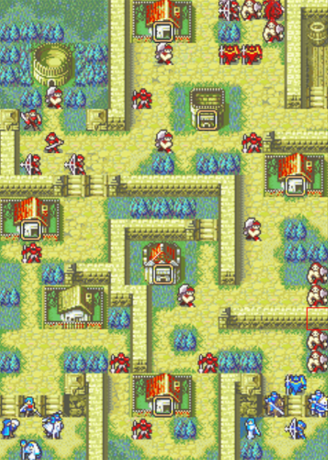
Edited layout
This map often feels like a slog because of the winding path the player must take to reach the castle. The enemies in the early section of the map reach the player before they've made their way to the castle leaving an open field of pointless space that they have to move their units through.
Unfortunately I never finished the overhaul and some of the maps I made never got implemented. The idea for this map removes the winding path entirely if players wish to skip it. Instead they are given the chance to choose a path, with the center one featuring a miniboss (in theory) on the fort tile. Additionally, (also in theory) the slim pathways allow players to funnel the enemies into specific player units, instead of having to deal with the more open space of the original map.
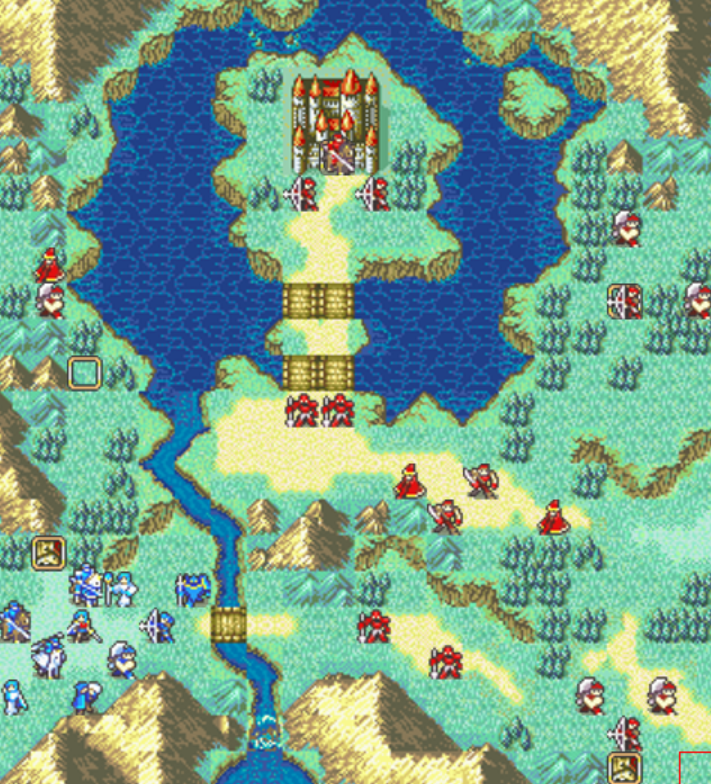
Original layout
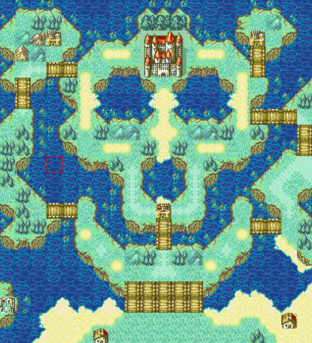
Edited layout